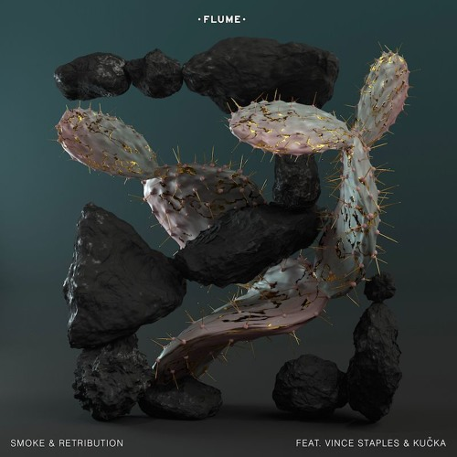

Flume
Harley Edward Streten, better known by his stage name Flume, is an Australian electronic music producer. His debut self-titled album was released on 9 November 2012, which peaked at No. 1 on the ARIA Albums Chart. Its lead single, "Holdin On", reached the top 20 on the related ARIA Singles Chart as well as #4 on Triple J's Hottest 100 Countdown in 2013. The album and single provided Flume with four wins and four nominations at the ARIA Music Awards of 2013. Wins included Best Male Artist, Breakthrough Artist – Release, Best Dance Release, and Producer of the Year.
On 5 January 2016 Flume shared details of his forthcoming sophomore album, Skin. The first single "Never Be Like You" reached number one in Australia in February 2016.Flume has remixed the likes of Lorde, Sam Smith, Arcade Fire and Disclosure.CareerHarley Edward Streten was born on 5 November 1991 and grew up on the Northern Beaches of Sydney, where he still resides. He began creating music at about the age of thirteen, with a basic production disc that was packaged in a box of cereal. In 2010, Streten began producing house music under his initials, HEDS. He created two tracks "Flow" and "Fizz", in addition to several remixes.